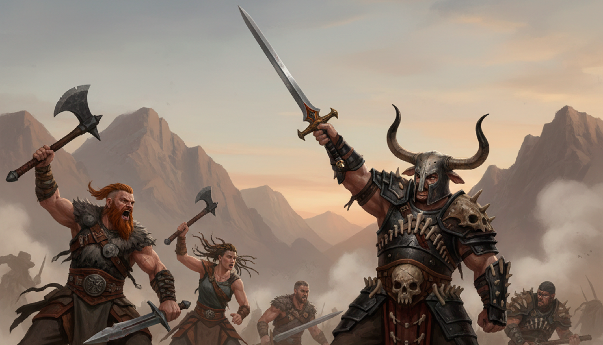
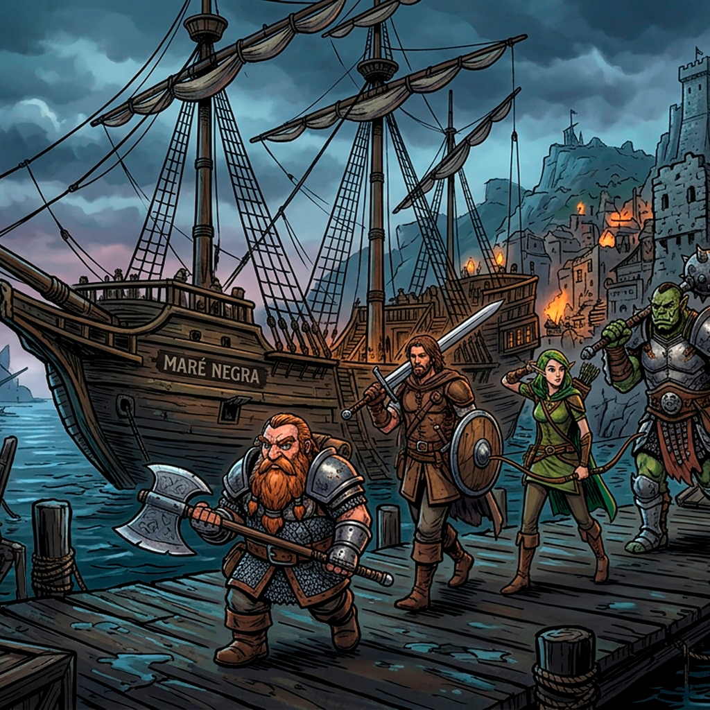
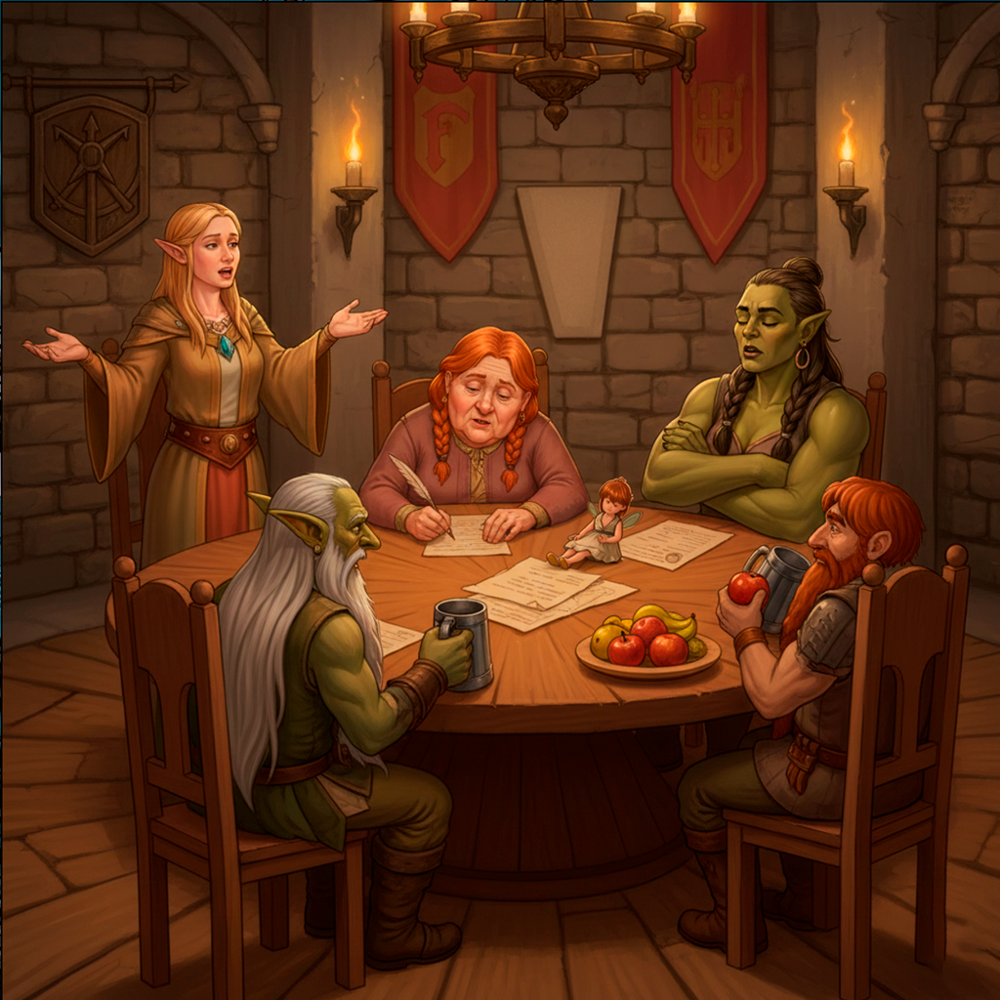

Phantasia é um mundo de aventuras, e onde há aventureiros há oportunidades. Indivíduos se reúnem em grupos com interesses em comum para oferecer mercadorias, informações, suporte e até conforto e segurança.

VândalosOs Vândalos são vários pequenos grupos de exploradores, mercenários, corsários, aventureiros e foras-da-lei unidos sob códigos de conduta e a liderança de Gëra McViking.
Eles atuam por toda Phantasia, mas no geral ficam nas costas.
Cada grupo possui seus próprios líderes e condutas, mas no geral todos reportam ao comando de Gëra. E isso traz muitas vantagens para todos, inclusive proteção sob o nome lendário da elfa.
E claro que manchar o nome dela traz repercursões bem pesadas...

Conselho de PhantasiaO Conselho de Phantasia é o enclave político que reúne representantes das espécias do continente, para que haja justiça e equidade nas relações e nas leis.
Cada governo de espécie escolhe internamente seu representante e o envia para uma embaixada no Reino dos Sábios, para então atuarem com o os representantes do Rei.
É atualmente composto por Alura dos humanos, Carólin dos elfos, Julian dos goblins, Elisa dos hobbits, Isis das fadas, Safira dos orcs e Túrin dos anões, além da rainha Jak'Ln. Esporadicamente, Gëra e Jonatas falam em nome dos chamados Povos Livres Miscigenados (os Vândalos e os Piratas, respectivamente).